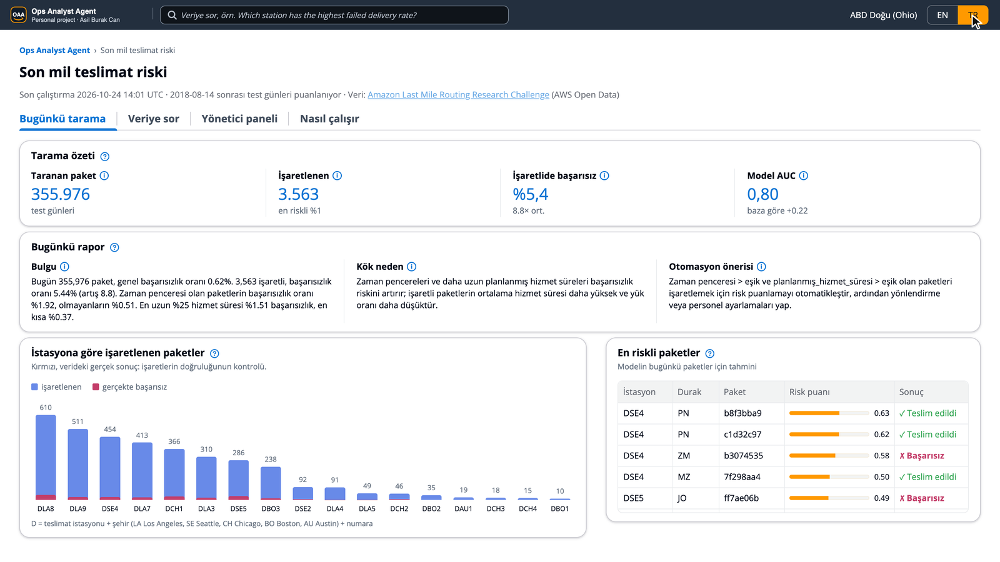

Live demo ops-analyst-agent.streamlit.app
Code github.com/asilburakcan/Ops-Analyst-Agent
Project page asilburakcan.github.io/Ops-Analyst-Agent
Code github.com/asilburakcan/Ops-Analyst-Agent
Project page asilburakcan.github.io/Ops-Analyst-Agent
Asil Burak Can · personal project · AWS, Python, LightGBM, LLM agents
A failed delivery costs a second attempt, a longer route and an unhappy customer. In a typical station, dispatchers spot risky packages from experience, and operations questions ("which station fails most, and why?") wait for someone who can write SQL. I wanted to see how much of this can be automated on AWS from data that already exists, with every claim checked against ground truth rather than trusted.
The 2021 Amazon Last Mile Routing Research Challenge dataset holds 6,112 real routes from 17 stations in 5 US metro areas, driven in July–August 2018. ingest.py reads the nested JSON from the public bucket and writes three Parquet tables to S3, registered in Glue: 6,112 routes, 904,527 stops and 1,457,175 packages. The run stops if a package has no stop, a stop has no visit order or a row is duplicated. Two real facts are kept and reported instead of removed: 6,515 dropoffs have no zone, and 1,422 packages appear at two stops of one route (attempted at one, delivered at the other). 0.76% of all packages fail.

SELECT, runs it, and repairs it up to two times if it fails or returns nothing.| Check | Result | Why it matters |
|---|---|---|
| Model AUC on 13 held-out days (355,976 packages) | 0.80 | The two simple rules, the station's past fail rate and "has a delivery window", reach 0.59 and 0.58. |
| Fail rate in the flagged 1% (3,563 packages) | 5.4% vs 0.62% | A reviewer who checks the flagged list finds about 9 times more failures than in a random sample. |
| Accuracy | not used | With 0.62% failures, "everything gets delivered" scores 99.38% and helps no one. |
| SQL agent golden set | 12 / 12, 0 repairs | 12 questions with reference SQL: joins, grouping, NULLs, percentages and business wording. |
The model's strongest signals are planned service time at the stop, packages per stop, the station, the time left to the delivery window and route size. The analyst's report points to the same cause with numbers: packages with a delivery window fail 1.92% vs 0.51% on the held-out days, and the longest quarter of service times fails 1.51% vs 0.37% for the shortest.
Most of the work was not prompting but closing the gaps where a language model guesses. Every error I found became a golden-set question, so it is checked on every change.
DATA_DICTIONARY.md defines package, stop, station, failed delivery and the rest. Both agents read its data terms; only the analyst reads the model terms. The SQL agent once read "station" as the depot stop type; the glossary and a golden question fixed it.SELECT only; write requests are refused before any query or LLM call.


Personal portfolio project, not affiliated with Amazon. Data: Amazon Last Mile Routing Research Challenge, AWS Open Data, CC BY-NC 4.0. Code: MIT.